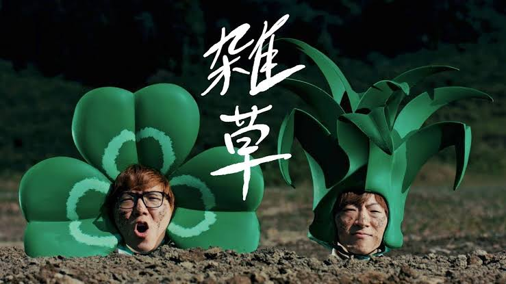
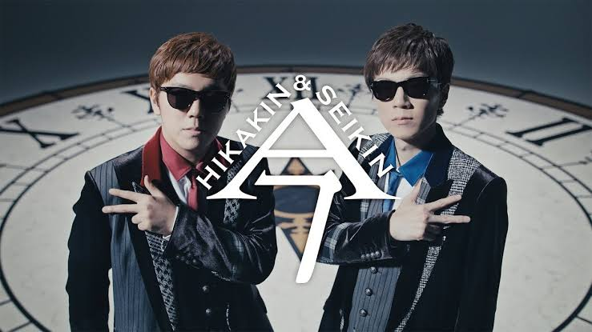

これまでの作品
YouTubeテーマソング
HIKAKIN&SEIKINの1枚目のシングル。
HIKAKINが実兄であるSEIKINに作詞・作曲を依頼し、YouTubeにてアカペラ・ヴァージョンで公開されたものを、TeddyLoidがアレンジした楽曲。

雑草
HIKAKIN&SEIKINの2枚目のシングル。
HIKAKINのスーパーでの下積み時代を「雑草」に例えている。TeddyLoidがアレンジ。
この曲を提げ、ミュージックステーションに初出演した。

今
HIKAKIN&SEIKINの3枚目のシングル。
「時間は巻き戻らない。今を生きよう」というメッセージが込められている。
TeddyLoidがアレンジ。

夢
HIKAKIN&SEIKINの4枚目のシングル。
「一度きりの人生の夢を叶えるために一人一人が主人公であり、周りを気にせず真っ直ぐ進んで欲しい」という強いメッセージ性とサウンドになっている。TeddyLoidがアレンジ。